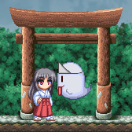
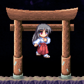
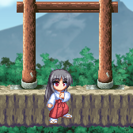

方向キー左右で操作します。幅の狭い足場にいるときや、精密な移動が必要な場 合に利用します。
方向キーを左または右に2回入力します。 エネミーブーストを除けば最速の移動手段なので、タイムアタックではこれを主 に用いることになります。また、歩き移動では渡れないような地形も最高速度のダッ シュならジャンプを省略して渡ることができるケースがあります。
ジャンプボタンで操作します。歩きながら、またはダッシュしながら出すことも できます。近くの足場に飛び移ったり、ジャンプしながらの式神アクションのために 利用します。マリオシリーズと異なり、ジャンプ中はダッシュに比べてスピードが落 ちる(ダッシュジャンプであっても)ので、タイムアタックの際はなるべくジャンプの 頻度を減らすことを考えるべきです。また、ジャンプの高度は常に一定で、ジャンプ ボタンを押す長さとは無関係です。そのため、ジャンプボタンはすぐに離してしまっ ても構いません。
方向キー下でしゃがみます。右下、左下でしゃがみながら歩くことができます。 しゃがみ状態でないと通過できない地形や、しゃがみ状態での式神アクションのため に利用します。また、御札を貼る位置を下にずらす効果もあります(しゃがみ貼り)。 なお、しゃがみ姿勢を保ったままジャンプすることはできません。
式神は式神ボタンで投げます。
式神には以下の2つのモードがあります:
式神には以下のような性質があります:
方向キー上下成分を入れずに投げます。その場投げでは約45度の放物線を描きま すが、歩き投げやダッシュ投げではもう少し鋭角になります。壁反射式神ジャンプに 利用する他、スイッチや敵を狙い撃ちするのにも使います。
方向キー上成分を入れて投げます。まったく移動せずに上投げした場合もわずか に自機の前方に投げます。高低差の大きい地形を上ったり、幅の広い断崖を渡るのに 利用します。また、復帰モードに移行するまでの時間が少し長いので、その場上投げ で一回床に反射させてからでも式神ジャンプが可能で、ここから三段ジャンプに移行することもできます。
方向キー下成分を入れて投げます。地を這うような軌道になりますが、足場の端 で投げた場合は下に投げ下ろすような形になります。式神ジャンプに利用することは 比較的少なく、地面にいる敵を素早く攻撃するのに多用されます。復帰モードに移行 するまでの時間は短めです。なお、しゃがみ投げ後はわずかの間ジャンプができなく なります。
ジャンプ中も式神は上横下の3方向に投げられます。この場合は、地上で投げた場 合に比べて自機の移動速度が加わったような軌道になります。この投げ方は応用範囲 が広いので、基本/応用技術の項で個別に述べます。
御札ボタンで貼ります。ジャンプ中やしゃがみ中に貼ることで貼る位置を調節で きます。貼ってから発動するまでには一定の時間がかかりますが、発動が近づくにつ れ御札の点滅が速くなるので、慣れれば発動の瞬間をかなり正確に見極めることがで きます。なお、御札は一度に1枚しか持てません。
御札全般に言えることですが、必ずしもステージ内にあるからといって使わなけ ればクリアできないというわけでもなかったりします。タイムアタックにおいて御札 の取得および発動待ちはかなりのタイムロスとなるので、使わずに済むならそれに越 したことはないといえます。
発動すると爆風を発生して、範囲内の土壁を破壊し、範囲内の敵にダメージを与 え、範囲内に自機がいれば吹き飛ばされた上でダメージを受けます(吹き飛ばされる 方向は爆風内の自機の位置に依存)。範囲はそれほど広くないので、土壁を掘る場合 などはなるべく接近して貼る必要があります。なお、当たり判定は一瞬で消滅するの で、まだ爆風エフェクトが残っている時点から通過が可能になります。
発動すると冷気を放出して、範囲内の水と敵すべてを凍らせます。自機には影響 を与えません。範囲は爆裂と比べるとかなり広く、凍らせたくないものがある場合は 少し離して貼る必要があります。冷凍は一定時間経つと解除されます。ただし、凍っ た敵に式神を当てると即座に冷凍が解除されてしまいます(水は大丈夫)。
発動すると突風を発生して、自機と式神の移動に大きく影響を与えます。また、 有効範囲内の風車を回します。それ以外の物体には影響を与えません。突風は一定時 間経つと止みます。突風の方向は、発動した瞬間における御札から自機を向いた方向 となります。上向きの突風が比較的よく利用されるため、しゃがみ貼りを覚えておく と便利です。
隆起ポイントの有効範囲内で発動すると、その隆起ポイントを隆起させます。有 効範囲内に入ってさえいれば同時にいくつでも隆起させられます。隆起した床は一定 時間経つと消滅します。隆起と障害物の間に自機が挟み込まれている場合、隆起は自 機を潰さないような形で停止します。この時、しゃがみ状態で挟み込まれるようにし ないと通過できない地形もあります。
鳥居の入口はけっこう広いです。以下の図は全て鳥居に入ったときのものです:
  
水とか氷とか隆起ポイントとか
すり抜け床と非すり抜け床について(下入力時の挙動、見た目が同じでもステージ によって違うとか)
マップ下端が谷底になっている(落ちるとミスになる)場合、下端での式神反射が 可能かどうかはステージによって異なります。
装備品を入手したときや、看板を読んだときなどにメッセージウィンドウが出て きますが、このときゲーム進行は完全に停止しています。なので、たとえばそれまで ダッシュしていたのならメッセージウィンドウ表示中に方向キーを離してしまっても また入れ直してからメッセージウィンドウを消せばそのままダッシュし続けられます。 要するにメッセージウィンドウ表示では1フレームたりとも消費されないということ のようです。この事実により、メッセージウィンドウ表示中はダッシュ方向転換が 100%成功するということになります。ただし、メニューを開いた場合は全ての入力が 一旦無効になってしまうようなので、「ポン太と話す」を使って意図的にこれを行う ことはできないようです。
ステージ開始時の待ち時間(タイムには影響しない)は式神ボタンでキャンセルで きます。ただし開幕ダッシュがしにくくなるのであまり利用価値はないかもしれませ ん。